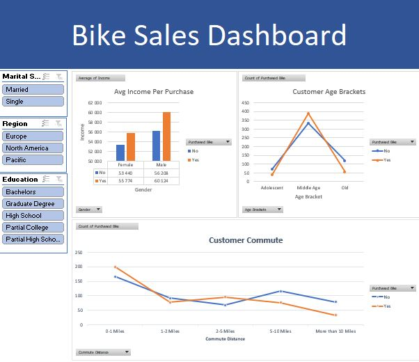

This project features a dynamic Tableau dashboard designed to visualize COVID-19 deaths data, offering insights into trends,
geographical distributions, and critical mortality metrics during the pandemic,
ultimately aiming to facilitate a deeper understanding of the data to support informed public health analysis and decision-making.


This project conducts an extensive SQL exploratory data analysis on COVID-19 deaths and vaccinations,
aiming to reveal trends and insights about vaccination rates and their effects on mortality,
ultimately enhancing the understanding of the pandemic's dynamics to support data-driven public health decisions.
This project provides a Python-based analysis of residential unit prices, with a focus on data cleaning, visualization, and exploratory data analysis (EDA).
Key insights include price distribution and correlations between factors such as unit size, location, and pricing.
An interactive Power BI dashboard that explores survey insights from data professionals, focusing on job satisfaction, field entry challenges,
career priorities, and demographics, providing a comprehensive view of the factors shaping the global data profession.

This project entails data cleaning, analysis, and visualization of bike sales data in Excel, examining factors such as income, gender, age,
commute distance, region, marital status, and education to reveal customer demographics and purchasing behavior through an interactive dashboard.
This Python project analyzes student test scores in math, reading, and writing, exploring correlations with parental education, lunch type, and test preparation.
The analysis includes data cleaning, visualization, and statistical insights into factors impacting academic performance.
An interactive Power BI dashboard that explores survey insights from data professionals, focusing on job satisfaction, field entry challenges,
career priorities, and demographics, providing a comprehensive view of the factors shaping the global data profession.
This project entails a thorough SQL data cleaning process of the Nashville Housing dataset, addressing inconsistencies, managing missing values,
and optimizing the data to facilitate accurate analysis and insightful exploration of housing trends and patterns in Nashville.
This project involves web scraping data on the largest U.S. companies by revenue, gathering key information like rank,
company name, industry, revenue, number of employees, and headquarters location.
The data is organized into a CSV file, making it ready for analysis and insights into the country's leading corporate players.